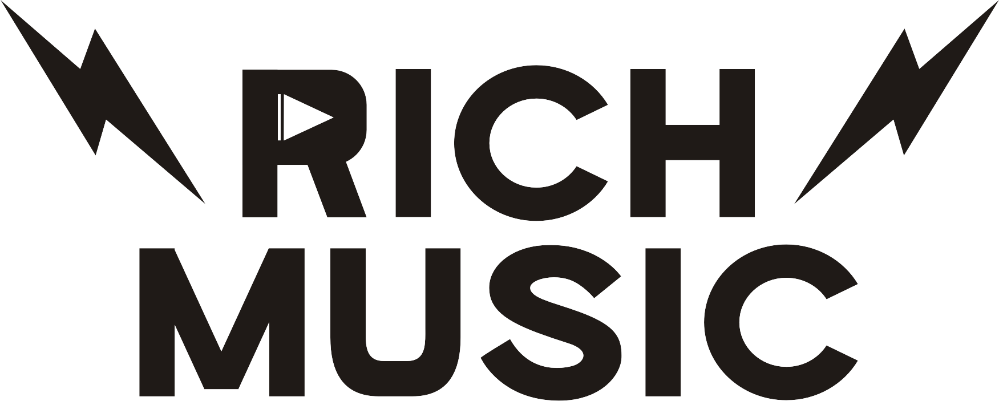

All Clients

Rich Music Online
Rich Music Online is a Jakarta-based digital music platform covering Indonesia's independent music scene. As Graphic Designer & Social Media Lead (Jul '22 – Oct '24), ECA led visual content production — social media design, event flyers, merchandise, and live event photography.
Selected Work